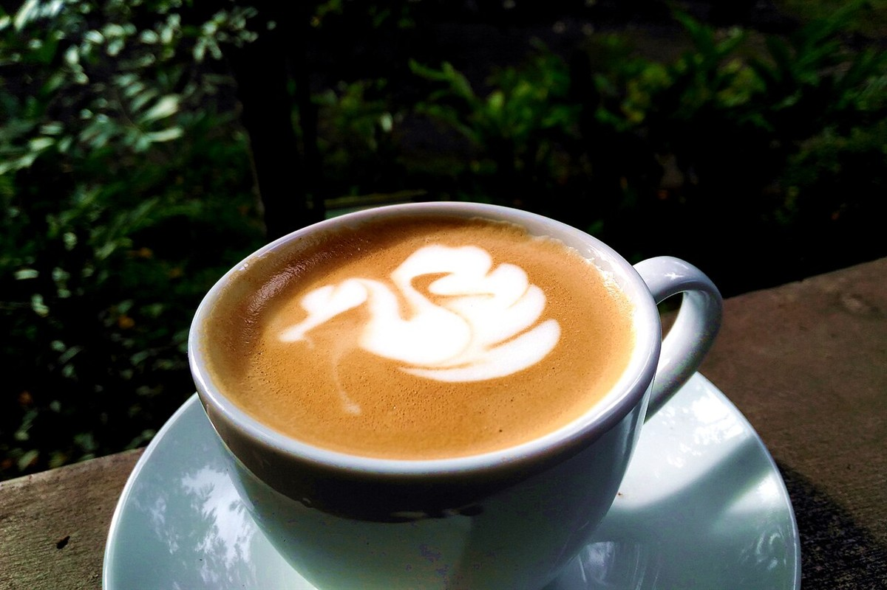
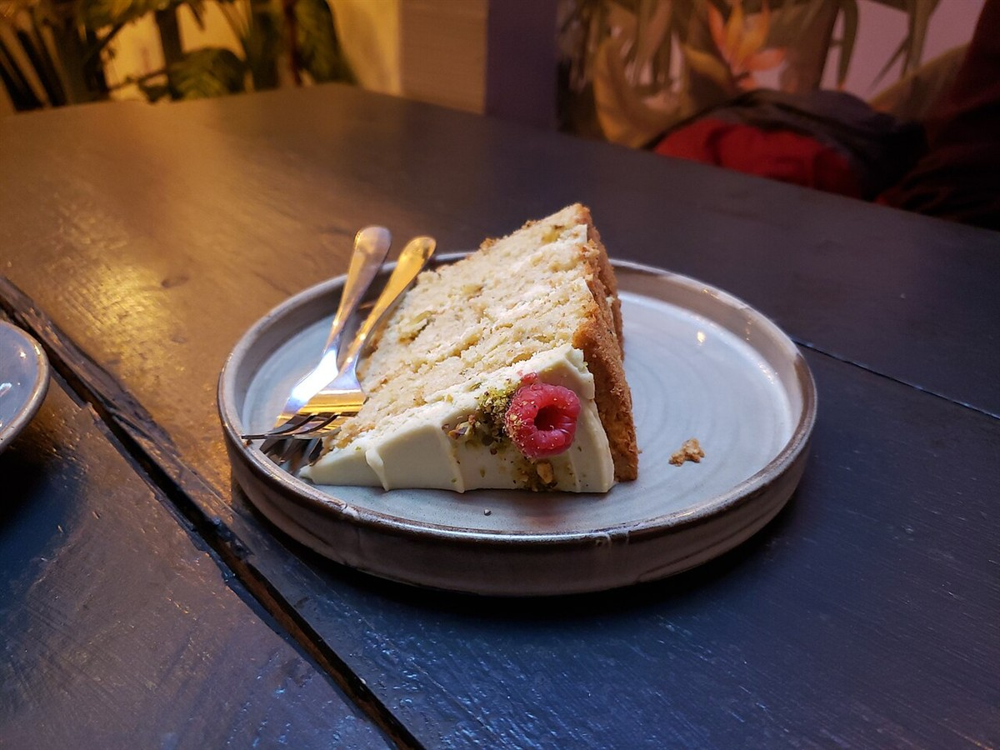

お店について
飛騨市古川町にあるカフェ、k.cafe and farm の基本情報です。詳しい内容は準備中のため、お電話またはInstagramでお問い合わせください。
- 店名
- k.cafe and farm
- 所在地
- 岐阜県飛騨市古川町是重223
- @k.cafe.and.farm
このサイトのコンセプトと配色は制作側の案です。店名の由来・お店の理念・提供内容を示すものではありません。
制作側のコピー案:『k から はじまる、ひと息。』『飛騨市古川町の、カフェ。』

